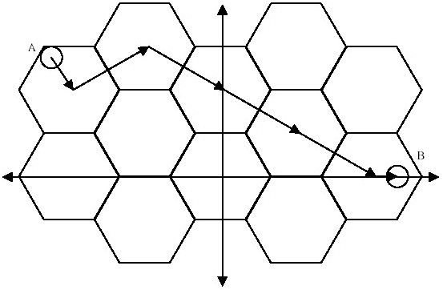

Imagine a perfectly formed honeycomb, spanning the infinite Cartesian plane. It is an interlocking grid composed of congruent equilateral hexagons. One hexagon is located so that its center is at the origin and has two corners on the X-axis. A bee must be very careful about how it travels in order not to get lost in the infinite plane. To get from an arbitrary point A to another arbitrary point B, it will first head from A to the exact center of the hexagon in which A is located. Then, it will travel in a straight line to the exact center of an adjacent hexagon. It will move from center to adjacent center until it has reached the hexagon containing point B. At the destination hexagon, it will move from the center to point B. In all cases, the bee will take a path of minimal distance that obeys the rules. The figure below demonstrates one possible minimal path from point A to point B.

Input will be in the form of 5 floating point numbers per line. The first number will be the length, in centimeters, of the sides of the hexagons. The next two numbers will be the x and y coordinates of point A, followed by the x and y coordinates of point B. The input will be terminated by a line containing five zeroes. Neither point A nor point B will ever be exactly on a border between hexagons.
For each line of the input, output the minimum length of a path from point A to point B, to the nearest 0.001 centimeters.
1.0 -3.2 2.2 3.3 0 9 1 4 5 1 0.1 0.09 0 0.21 0 0 0 0 0 0
7.737 5.000 0.526